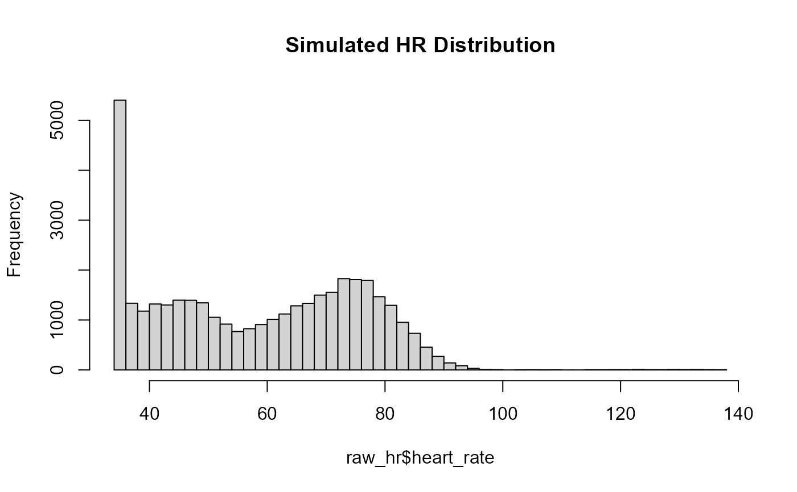

`raw_hr` contains *synthetic Fitbit‑style heart rate (HR) data* for two simulated participants (`P01` and `P02`). The dataset spans **two weeks** at **1‑minute resolution**, with **realistic physiological patterns**, **exercise sessions**, **sleep‑related HR depressions**, and **Fitbit‑like missingness** (periodic NA values).
Format
A tibble with three columns:
- id
Character participant ID ("P01", "P02").
- hr_timestamp
POSIXct timestamp at 1‑minute resolution (UTC).
- heart_rate
Heart rate in beats per minute (integer).
Details
This dataset is designed for demonstration and testing of HR‑related processing and visualisation tools within the `hypometrics` package.
The dataset includes:
Participants
"P01"— HR start:"2026‑01‑01 07:17:00"(UTC)"P02"— HR start:"2026‑01‑02 15:52:00"(UTC)
Simulation features
1‑minute HR sampling for 14 days per participant
Circadian rhythm (afternoon HR peak, overnight depression)
Sleep HR lowering (smaller noise, lower baseline)
Stochastic noise resembling optical HR sensors
Exercise bouts with HR rise → plateau → recovery
Fitbit‑style missingness: 1–2 minute random gaps, occasional long dropouts with NA heart rate
HR values are rounded to whole‑number bpm
Relation to CGM data
The HR timeline is aligned with the simulated CGM dataset [`raw_cgm`]: for each participant, HR starts exactly when CGM monitoring begins and continues for the same two‑week duration.
Generation script
The data are reproducibly generated using:
data-raw/simulate_raw_hr.RExamples
data(raw_hr, package = "hypometrics")
# Inspect structure
dplyr::glimpse(raw_hr)
#> Rows: 40,320
#> Columns: 3
#> $ id <chr> "P01", "P01", "P01", "P01", "P01", "P01", "P01", "P01", "…
#> $ hr_timestamp <dttm> 2026-01-01 07:17:00, 2026-01-01 07:18:00, 2026-01-01 07:…
#> $ heart_rate <dbl> 63, 65, 72, 68, 55, 69, 68, 67, 64, 65, 61, 70, 64, 64, 6…
# Check first few HR values for P01
dplyr::filter(raw_hr, id == "P01") %>% head()
#> # A tibble: 6 × 3
#> id hr_timestamp heart_rate
#> <chr> <dttm> <dbl>
#> 1 P01 2026-01-01 07:17:00 63
#> 2 P01 2026-01-01 07:18:00 65
#> 3 P01 2026-01-01 07:19:00 72
#> 4 P01 2026-01-01 07:20:00 68
#> 5 P01 2026-01-01 07:21:00 55
#> 6 P01 2026-01-01 07:22:00 69
# Distribution of HR
hist(raw_hr$heart_rate, breaks = 40, main = "Simulated HR Distribution")

# Missingness rate per participant
raw_hr %>%
dplyr::group_by(id) %>%
dplyr::summarise(
pct_missing = mean(is.na(heart_rate)) * 100
)
#> # A tibble: 2 × 2
#> id pct_missing
#> <chr> <dbl>
#> 1 P01 4.39
#> 2 P02 7.58